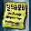
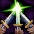
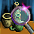
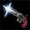
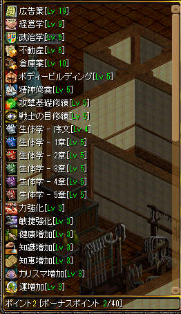
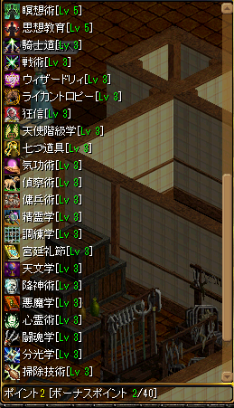

ギルドスキル一覧
● ギルドスキルポイント(GSP)はギルドLv1上昇につき1追加される。
● メインクエスト Season1 天上界報酬「天上の殿堂」で、最大+40まで上昇可能。
● ステータス上昇はギルド内の職位が上がるほど恩恵を得られる。
● GvGアリーナワールドではGHLv1状態で計算する必要あり。
● 括弧内は[新人, 一般・元老, 副マス, GM]の補正値を意味しています。
【例】 力強化がLv2の時、力+[Lv * 10 12 15 18]
(1) 一般ギルド員およびギルド元老 2 * 12 = 力+24
(2) 副ギルドマスター 2 * 15 = 力+30
小数点以下切り捨て。
| スキル名 (限界Lv) |
効果 | 説明 | 必要条件 | 備考 |
|---|---|---|---|---|
| 広告学 (Max 19)  |
最大ギルドメンバー数 +[Lv * 10] |
ギルドを大勢に広告する技術。 より多くのギルドメンバーを募集する事ができる。 200人まで可能。 |
なし | - ギルドホール内「派遣官ベルント」より最大人数を50人追加できる。 - 200人まではギルド石像「シロイオのホール,ホールの紐」と重複。 |
| 経営学 (Max 9) |
最大副ギルドマスター数 +[Lv * 1] |
ギルド経営に関する学問を研究してサブギルドマスターの数を増やす事ができる。 ギルドメンバー募集の上限数を超えて増やす事は出来ない。 さらに、政治学が高く、広告学が低い場合は制限がかかる場合もある。 |
なし | - ギルド石像「ナルの神像,台座」で +[Lv * 0.5](切り上げ)人数増やせる。(最大9人) |
| 政治学 (Lv6) |
最大ギルド委員数 +[Lv * 5] |
政治に関して研究してギルド委員の数を増やす事ができる。 ギルドメンバー募集の上限数を超えて増やす事は出来ない。 さらに、経営学が高く、広告学が低い場合は制限がかかる場合もある。 |
なし | - 2019.2現在 未実装 - Lvは上げられるが委員に任命不可 |
| 不動産 (Lv6) |
古都以外の縁故地数 +[Lv * 1] |
不動産を研究してギルドの縁故地を増やす事ができる。 縁故地が増えるとギルドホールに接近できる町が増える。 縁故地に支払う土地代金も別途必要になる。 |
スキルアップ時 1000万Gold 土地代金 1億Gold～ |
[実適用レベル] GH無し: Lv1まで GHLv1 Lv2まで GHLv2 Lv3まで GHLv3 Lv4まで GHLv4 Lv5まで |
| 倉庫業 (Lv10) |
ギルド倉庫 +[Lv * 20] | ギルドに倉庫を開設することができる。 倉庫はギルドメンバーが共同で使用することができる。 倉庫制作費がかかるのが他のスキルと違うところだ。 | GHランク1以上 スキルアップ時 100万Gold |
- 倉庫は最大20億Goldまで保管可能。 - 取り出し設定はギルドマスターが行う。 |
| ボディービルディング (Lv5) |
HP+[Lv * 50 60 80 100] |
ギルドメンバーの肉体を鍛錬できるスキル。 ギルドメンバーの最大HPが増加する。 |
なし | [実適用レベル] GH無し: Lv3まで GHLv1 Lv4まで |
| 精神修養 (Lv5) |
CP+[Lv * 30 40 60 80] | ギルドメンバーの精神を鍛錬できるスキル。 ギルドメンバーの最大CPが増加する。 |
なし | [実適用レベル] GH無し: Lv3まで GHLv1 Lv4まで |
| 攻撃基礎修練 (Lv5) |
命中率 +[Lv * 0.5 1.0 1.5 2.0](%) |
ギルドメンバーの攻撃正確度を鍛錬できるスキル。 ギルドメンバーの命中率が増加する。 |
なし | [実適用レベル] GH無し: Lv3まで GHLv1 Lv4まで |
| 戦士の目修練 (Lv5) |
回避率 +[Lv * 0.5 1.0 1.5 2.0](%) |
ギルドメンバーの戦士としての目を鍛錬できるスキル。 ギルドメンバーの回避率が増加する。 |
なし | [実適用レベル] GH無し: Lv3まで GHLv1 Lv4まで |
| 生体学 - 序文 (Lv5) |
経験値 +[Lv * 5](%) |
転生者について、生体研究を通じて転生経験がないギルドメンバーの獲得経験値を増加させる。 | なし | [実適用レベル] GHLv1 Lv3まで - 無転プレイヤーのみ有効 |
| 生体学 - 1章 (Lv5) |
経験値 +[Lv * 6](%) |
転生者について、生体研究を通じて1次転生したギルドメンバーの獲得経験値を増加させる。 | なし | [実適用レベル] GHLv1 Lv3まで - 1転プレイヤーのみ有効 |
| 生体学 - 2章 (Lv5) |
経験値 +[Lv * 7](%) |
転生者について、生体研究を通じて2次転生したギルドメンバーの獲得経験値を増加させる。 | なし | [実適用レベル] GHLv1 Lv3まで - 2転プレイヤーのみ有効 |
| 生体学 - 3章 (Lv5) |
経験値 +[Lv * 8](%) |
転生者について、生体研究を通じて3次転生したギルドメンバーの獲得経験値を増加させる。 | なし | [実適用レベル] GHLv1 Lv3まで - 3転プレイヤーのみ有効 |
| 生体学 - 4章 (Lv5) |
経験値 +[Lv * 9](%) |
転生者について、生体研究を通じて4次転生したギルドメンバーの獲得経験値を増加させる。 | なし | [実適用レベル] GHLv1 Lv3まで - 4転プレイヤーのみ有効 |
| 生体学 - 5章 (Lv5) |
経験値 +[Lv * 10](%) |
転生者について、生体研究を通じて5次転生したギルドメンバーの獲得経験値を増加させる。 | なし | [実適用レベル] GHLv1 Lv3まで - 5転プレイヤーのみ有効 |
| 力強化 (Lv3) |
力+[Lv * 10 12 15 18] | ギルドメンバーの力が増加する。 | なし | [実適用レベル] GH無し: Lv2まで |
| 敏捷強化 (Lv3) |
敏捷+[Lv * 10 12 15 18] | ギルドメンバーの敏捷が増加する。 | なし | [実適用レベル] GH無し: Lv2まで |
| 健康増加 (Lv3) |
健康+[Lv * 10 12 15 18] | ギルドメンバーの健康が増加する。 | なし | [実適用レベル] GH無し: Lv2まで |
| 知識増加 (Lv3) |
知識+[Lv * 10 12 15 18] | ギルドメンバーの知識が増加する。 | なし | [実適用レベル] GH無し: Lv2まで |
| 知恵増加 (Lv3) |
知恵+[Lv * 10 12 15 18] | ギルドメンバーの知恵が増加する。 | なし | [実適用レベル] GH無し: Lv2まで |
| カリスマ増加 (Lv3) |
カリスマ+[Lv * 10 12 15 18] | ギルドメンバーのカリスマが増加する。 | なし | [実適用レベル] GH無し: Lv2まで |
| 運増加 (Lv3) |
運+[Lv * 10 12 15 18] | ギルドメンバーの運が増加する。 | なし | [実適用レベル] GH無し: Lv2まで |
| 瞑想術 (Lv5) |
低下した能力値回復 +0.5 + [Lv * 0.5](%) |
ギルドメンバーの精神を鍛練するスキル。どんな状況でも同様しない精神力はフィールド入場時に低下したステータスを回復させる。 | なし | [実適用レベル] GHLv1 Lv3まで - ステ低下が30%のフィールドであれば、Lv5で低下量が27%まで軽減する。 |
| 思想教育 (Lv5) |
低下した最大属性抵抗回復 +0.5 + [Lv * 0.5](%) |
ギルドメンバーの意志を鍛練するスキル。何物にも屈しない鉄の意志は、低下した最大属性抵抗値を回復させる。 | なし | [実適用レベル] GHLv1 Lv3まで - 抵抗MAXが70%のフィールドであれば、Lv5で73%まで回復する。 |
| 騎士道 (Lv3)  |
剣士 slv+[Lv / 5 3 2 1] | ギルドメンバーの剣士スキルレベルが増加する。 | スキルマスター称号 攻撃基礎修練 Lv1 力強化 Lv1 |
[実適用レベル] GH無し: Lv1まで GHLv1: Lv2まで |
| 戦術 (Lv3) |
戦士 slv+[Lv / 5 3 2 1] | ギルドメンバーの戦士スキルレベルが増加する。 | スキルマスター称号 ボディービルディング Lv1 力強化 Lv1 |
[実適用レベル] GH無し: Lv1まで GHLv1: Lv2まで |
| ウィザードリィ (Lv3) |
ウィザード slv+[Lv / 5 3 2 1] | ギルドメンバーのウィザードスキルレベルが増加する。 | スキルマスター称号 精神修養 Lv1 知識強化 Lv1 |
[実適用レベル] GH無し: Lv1まで GHLv1: Lv2まで |
| ライカントロフィー (Lv3) |
ウルフマン slv+[Lv / 5 3 2 1] | ギルドメンバーのウルフマンスキルレベルが増加する。 | スキルマスター称号 戦士の目修練 Lv1 健康増加 Lv1 |
[実適用レベル] GH無し: Lv1まで GHLv1: Lv2まで |
| 狂神 (Lv3) |
ビショップ slv+[Lv / 5 3 2 1] | ギルドメンバーのビショップスキルレベルが増加する。 | スキルマスター称号 ボディービルディング Lv1 知恵増加 Lv1 |
[実適用レベル] GH無し: Lv1まで GHLv1: Lv2まで |
| 天使階級学 (Lv3) |
追放天使 slv+[Lv / 5 3 2 1] | ギルドメンバーの追放天使スキルレベルが増加する。 | スキルマスター称号 精神修養 Lv1 カリスマ増加 Lv1 |
[実適用レベル] GH無し: Lv1まで GHLv1: Lv2まで |
| 七つ道具 (Lv3) |
シーフ slv+[Lv / 5 3 2 1] | ギルドメンバーのシー符スキルレベルが増加する。 | スキルマスター称号 攻撃基礎修練 Lv1 運増加 Lv1 |
[実適用レベル] GH無し: Lv1まで GHLv1: Lv2まで |
| 気功術 (Lv3) |
武道家 slv+[Lv / 5 3 2 1] | ギルドメンバーのシーフスキルレベルが増加する。 | スキルマスター称号 攻撃基礎修練 Lv1 運増加 Lv1 |
[実適用レベル] GH無し: Lv1まで GHLv1: Lv2まで |
| 偵察術 (Lv3) |
アーチャー slv+[Lv / 5 3 2 1] | ギルドメンバーアーチャースキルレベルが増加する。 | スキルマスター称号 攻撃基礎修練 Lv1 敏捷増加 Lv1 |
[実適用レベル] GH無し: Lv1まで GHLv1: Lv2まで |
| 傭兵術 (Lv3) |
ランサー slv+[Lv / 5 3 2 1] | ギルドメンバーランサースキルレベルが増加する。 | スキルマスター称号 戦士の目修練 Lv1 敏捷増加 Lv1 |
[実適用レベル] GH無し: Lv1まで GHLv1: Lv2まで |
| 精神学 (Lv3)  |
サマナー slv+[Lv / 5 3 2 1] | ギルドメンバーサマナースキルレベルが増加する。 | スキルマスター称号 精神修養 Lv1 知恵増加 Lv1 |
[実適用レベル] GH無し: Lv1まで GHLv1: Lv2まで |
| 調練学 (Lv3) |
ビーストテイマー slv+[Lv / 5 3 2 1] | ギルドメンバービーストテイマースキルレベルが増加する。 | スキルマスター称号 戦士の目修練 Lv1 健康増加 Lv1 |
[実適用レベル] GH無し: Lv1まで GHLv1: Lv2まで |
| 宮廷礼法 (Lv3) |
プリンセス slv+[Lv / 5 3 2 1] | ギルドメンバープリンセススキルレベルが増加する。 | スキルマスター称号 攻撃基礎修練 Lv1 カリスマ増加 Lv1 |
[実適用レベル] GH無し: Lv1まで GHLv1: Lv2まで |
| 天文学 (Lv3) |
リトルウィッチ slv+[Lv / 5 3 2 1] | ギルドメンバーリトルウィッチスキルレベルが増加する。 | スキルマスター称号 精神修養 Lv1 運増加 Lv1 |
[実適用レベル] GH無し: Lv1まで GHLv1: Lv2まで |
| 降神術 (Lv3) |
ネクロマンサー slv+[Lv / 5 3 2 1] | ギルドメンバーネクロマンサースキルレベルが増加する。 | スキルマスター称号 戦士の目修練 Lv1 知識増加 Lv1 |
[実適用レベル] GH無し: Lv1まで GHLv1: Lv2まで |
| 悪魔学 (Lv3) |
悪魔 slv+[Lv / 5 3 2 1] | ギルドメンバー悪魔スキルレベルが増加する。 | スキルマスター称号 ボディービルディング Lv1 運増加 Lv1 |
[実適用レベル] GH無し: Lv1まで GHLv1: Lv2まで |
| 心霊術 (Lv3) |
霊術師 slv+[Lv / 5 3 2 1] | ギルドメンバー霊術師スキルレベルが増加する。 | スキルマスター称号 精神修養 Lv1 カリスマ増加 Lv1 |
[実適用レベル] GH無し: Lv1まで GHLv1: Lv2まで |
| 闘魂学 (Lv3) |
闘士 slv+[Lv / 5 3 2 1] | ギルドメンバー闘士スキルレベルが増加する。 | スキルマスター称号 精神修養 Lv1 健康増加 Lv1 |
[実適用レベル] GH無し: Lv1まで GHLv1: Lv2まで |
| 分光学 (Lv3) |
光奏師 slv+[Lv / 5 3 2 1] | ギルドメンバー光奏師スキルレベルが増加する。 | スキルマスター称号 力強化 Lv1 知識増加 Lv1 |
[実適用レベル] GH無し: Lv1まで GHLv1: Lv2まで |
| 掃除技術 (Lv3) |
光奏師 slv+[Lv / 5 3 2 1] | ギルドメンバーメイドスキルレベルが増加する。 | スキルマスター称号 力強化 Lv1 運増加 Lv1 |
[実適用レベル] GH無し: Lv1まで GHLv1: Lv2まで |
| 双剣術 (Lv3) |
光奏師 slv+[Lv / 5 3 2 1] | ギルドメンバー獣人スキルレベルが増加する。 | スキルマスター称号 力強化 Lv1 知識増加 Lv1 |
[実適用レベル] GH無し: Lv1まで GHLv1: Lv2まで |
| 闇魔法学 (Lv3) |
光奏師 slv+[Lv / 5 3 2 1] | ギルドメンバー黒魔術師スキルレベルが増加する。 | スキルマスター称号 カリスマ増加 Lv1 知識増加 Lv1 |
[実適用レベル] GH無し: Lv1まで GHLv1: Lv2まで |
| 射撃術 (Lv3)  |
光奏師 slv+[Lv / 5 3 2 1] | ギルドメンバーマスケッティアスキルレベルが増加する。 | スキルマスター称号 攻撃基礎修練 Lv1 戦士の目修練 Lv1 |
[実適用レベル] GH無し: Lv1まで GHLv1: Lv2まで |
| ポーション調合術 (Lv3) |
光奏師 slv+[Lv / 5 3 2 1] | ギルドメンバーアルケミストスキルレベルが増加する。 | スキルマスター称号 精神修養 Lv1 知識増加 Lv1 |
[実適用レベル] GH無し: Lv1まで GHLv1: Lv2まで |
全部振った場合
2019.2現在、GLv200 + 天上ボーナス4回(もしくはGLv204以上)で全部振れます。